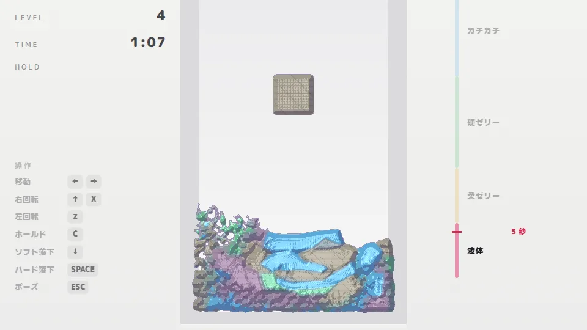
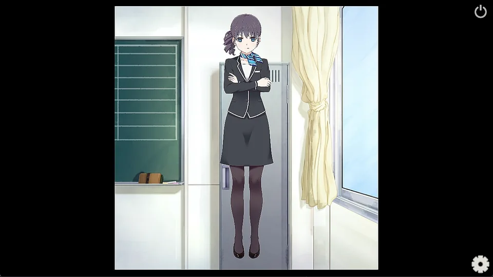
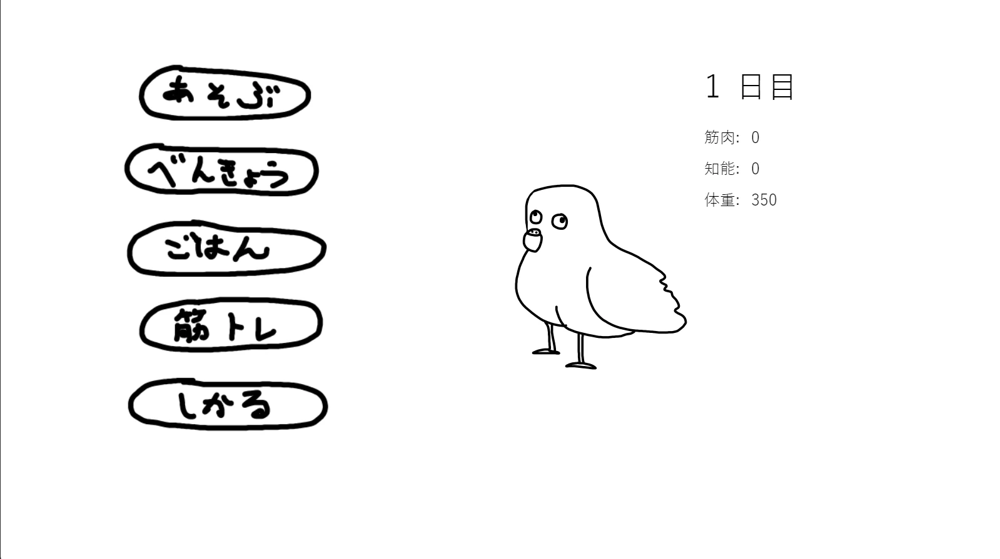
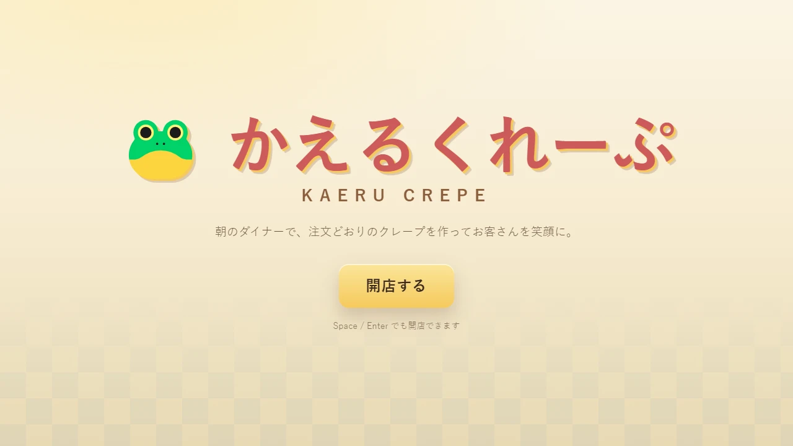
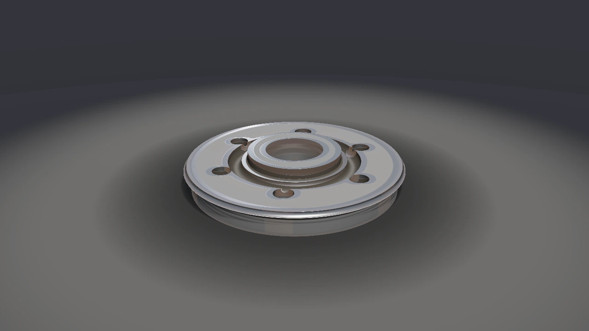

FLUID DROP
積んだブロックが80秒周期でカチカチ、ゼリー、液体へ変化する落ちものパズルです。流体シミュレーションの結果が、ブロックの消し方に直接影響します。
/ works
ゲーム、描画技術、制作を支えるツールを中心に、学部時代から現在までの成果をまとめています。
個人制作に加え、企画・実装・リーダーなどを担当したチーム制作を掲載しています。一部の作品は、メンバーの許諾の都合により配布していません。
ダウンロードせずブラウザですぐに遊べる2作品を、先頭で紹介します。
自作ゲームエンジン MitiruEngine を使った作品と、描画技術に関する開発です。各作品の詳細は専用ページで紹介しています。

Live2D Cubism SDK の Direct3D 11 向けレンダラーを読み解き、描画処理を Direct3D 12 で再実装しました。クリッピングマスク、オフスクリーン、advanced blend を含みます。
詳細を見る →
2023年に TyranoScript で制作した育成ゲームを MitiruEngine へ移植し、追加要素を加えたリメイクです。バックログ、既読管理、セーブ、ロードも実装しています。
詳細を見る →
クレープ作りと物語を組み合わせたゲームです。コミックマーケット106で配布した Godot 版を MitiruEngine へ移植し、UIとゲーム画面を HTML/CSS で構築しました。
詳細を見る →
形を組み合わせて立体を作るモデラーです。汚れや摩耗を形状から計算します。Java 製ツール Grasp3D の修正と機能追加から始め、C++へ移植しました。作成した形は MitiruEngine へ渡せます。
詳細を見る →学部時代から制作してきた個人・チーム作品です。
怪物から逃げながら塔の脱出を目指す倉庫番系パズルです。C++とSiv3Dを使った初めてのチーム開発作品で、会津大学・蒼翔祭2022とコミックマーケット101で無料頒布しました。
迫りくる化け物を倒すローグライクです。初めてプロジェクトリーダーを担当し、蒼翔祭2023とコミックマーケット103で無料頒布しました。
落ちてくる飴玉を、回転するドーナツに付けて消す落ちものパズルです。初めての Unity 開発作品で、蒼翔祭2024に展示しました。
ボロノイ図を使った最短経路探索シミュレーションです。「ビジュアルコンピューティングのための幾何学」の授業で得た知見をもとに作成しました。
GitHub →キャラクターを育成してアクションへ挑むゲームです。チームを支援しながら開発し、コンポーネントシステムを参考にした設計と、専用のステージ制作ツールを担当しました。
Vimの上下左右移動キー（h、j、k、l）で迷路を解くゲームです。用意した数十ステージと、全ステージクリア後に開放されるランダム生成のエンドレスモードを収録しています。
ダウンロード →中心となるのは、C++20で開発しているheader-onlyの自作ゲームエンジンMitiruEngineです。ここでは、エンジンや研究、制作のために開発した周辺ツールを紹介します。
MitiruEngineのプロジェクト作成、ビルド、実行するCLIです。mitiru new、mitiru build、mitiru runを備え、エンジンキャッシュとTOML設定も管理します。
LSDJでチップチューンを制作するためのツールです。ブラウザ上でstem分離とピッチ検出するビューアと、単旋律MIDIを.sav形式へ変換するC++コンバータを収録しています。
レンダリングパイプラインを学ぶために開発したレンダラーです。シェーディング、ライティング、テクスチャマッピングを実装しています。
GitHub →シミュレーションが定常状態に達したかを統計的に判定するMSERのC++実装です。BDA 2025投稿論文の解析に使用しました。
GitHub →Siv3Dのリソース管理をGUIで自動化するツールです。設計にはMVCを採用しました。
GitHub →ゲームやソフトウェア以外の制作です。各画像をクリックすると原寸で開きます。
短編小説と、オリジナルのTRPG作品です。